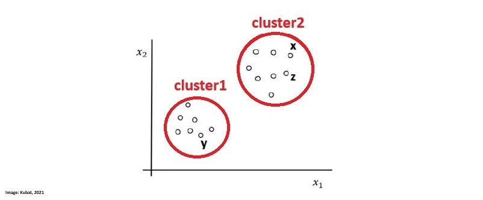
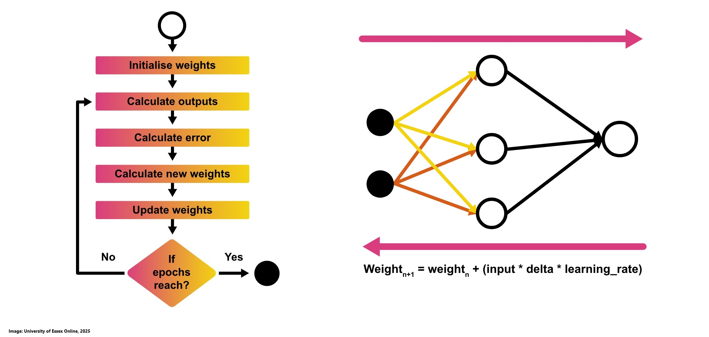
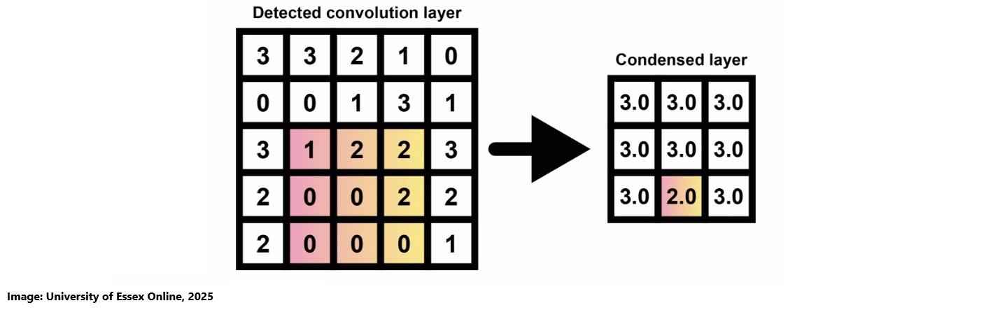
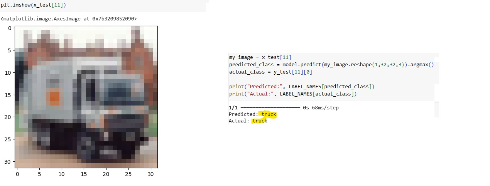

MACHINE LEARNING
Artefacts from this module
This section of the e-portfolio documents my learning and development throughout the machine learning module, aligning with the specified requirements and grading criteria. It includes artefacts and reflections that demonstrate my progress, contributions, and insights gained during the module.
The weekly portfolio entries include:
- Weekly Theory Review: An overview of each week’s theory, serving as a personal cheat sheet that may vary in depth depending on my prior knowledge and does not cover every topic in full detail.
- Weekly Contributions and Artifacts: A showcase of my work from each week, which forms an essential part of the module’s assessed e-Portfolio.
- Personal Reflection: A brief reflection on the knowledge gained, individual contributions, teamwork experiences, and the overall impact on my professional and personal development which is also a part of the module’s assessed e-Portfolio component.
- References: A list of sources for all cited content.
Theory
4th Industrial Revolution & Machine Learning
We took a closer look at machine learning, often described as automating automation or getting computers to program themselves, which is a field of research that has existed for over 60 years. It enables machines to learn from data and make decisions without human intervention, driving what is widely considered the fourth industrial revolution.
The Fourth Industrial Revolution is marked by rapid advancements in technology that are transforming industries, economies, and societies at an unprecedented speed. Unlike previous industrial revolutions, this one is characterized by velocity, scope, and systems impact, evolving at an exponential rather than a linear pace. It is driven by emerging technologies such as artificial intelligence (AI), robotics, the Internet of Things (IoT), autonomous vehicles, 3D printing, biotechnology, and quantum computing. These innovations are revolutionizing sectors by enhancing automation, improving efficiency, and creating new economic opportunities (Schwab, 2016).
As the Fourth Industrial Revolution continues to drive rapid technological advancements, machine learning has emerged as a key enabler of this transformation. Often described as automating automation or allowing computers to program themselves, machine learning has been a field of research for over 60 years. By enabling machines to learn from data and make decisions without human intervention, it plays a crucial role in shaping the intelligent systems that power Industry 4.0 (University of Essex Online, 2025). The following image provides an overview of the various machine learning areas alongside example use-cases:
Contributions & Artefacts
Collaborative Discussion 1 (Part 1 of 3)
The Fourth Industrial Revolution, or Industry 4.0, is centered around cyber-physical systems and differs from the three preceding industrial revolutions by following an exponential rather than a linear trajectory, with no historical precedent. It is driven by velocity, scope, and systemic impact (Schwab, 2016).
Globally, the volume of data generated is increasing at an extraordinary rate. In 2010, approximately 2 zettabytes of data were created, while projections for 2025 estimate this number to reach 181 zettabytes representing a 90-fold increase in just 15 years (Kumar, 2024).
With this rapid data growth comes a heightened risk of data breaches and leaks due to information system failures. A striking example occurred on the very day of this discussion, when the names and NRIC numbers of over 3000 individuals were exposed in Singapore due to what the Council for Estate Agencies attributed to a technical error (Cheng, 2025). While data breaches have historically been more common in private companies, there has been a recent surge in incidents involving government-run organizations. Such breaches not only lead to financial losses but also public trust issues, as citizens increasingly perceive their government-held data to be at risk (Piepgrass et al., 2024).
These vulnerabilities are not limited to a single country or region but are widespread across various governments. As Booth (2025) highlights, key factors contributing to these issues include outdated legacy systems, poor coordination, and a shortage of skilled cybersecurity professionals.
What are your thoughts on data breaches in the public sector due to information system failures? How can governments better protect the sensitive data they hold?
Reflection of this week
The start of this module provided a great opportunity to explore various aspects of the 4th industrial revolution in more depth while putting machine learning as part of this industrial revolution into focus. I found the provided literature insightful and believe that the collaborative discussion on Industry 4.0 and a case where information system failure has led to data loss will be valuable in gaining diverse perspectives on the impact such scenarios have across different sectors. I'm curious to see how other students view these developments and look forward to engaging in further discussions in the coming weeks.
References
- University of Essex Online (2025) ‘Introduction to Machine Learning’ [Online learncast]. In: Machine Learning. University of Essex. Available at: https://www.my-course.co.uk/mod/scorm/player.php?a=17528¤torg=articulate_rise&scoid=35130&sesskey=RHrcp17sp4&display=popup&mode=normal (Accessed: 29.01.2025).
- Schwab, K. (2016) The Fourth Industrial Revolution: What it means and how to respond. World Economic Forum. Available at: https://www.weforum.org/stories/2016/01/the-fourth-industrial-revolution-what-it-means-and-how-to-respond/ (Accessed: 29 January 2025).
- Kumar, N. (2024) Big data statistics 2025: Growth and market data. Demand Sage. Available at: https://www.demandsage.com/big-data-statistics/ (Accessed: 29 January 2025).
- Cheng, I. (2025) ‘Over 3,000 individuals’ names, NRIC numbers leaked due to CEA’s IT system error’, The Straits Times, 29 January. Available at: https://www.straitstimes.com/singapore/over-3000-individuals-names-nric-numbers-leaked-due-to-ceas-it-system-error (Accessed: 29 January 2025).
- Piepgrass, S.C., Mirza, S., Shephard, W. and Fishel, G. (2024) 'Unique aspects of data incident response in local government', Regulatory Oversight, 1 March. Available at: https://www.regulatoryoversight.com/2024/03/unique-aspects-of-data-incident-response-in-local-government/ (Accessed: 29 January 2025).
- Booth, R. (2025) 'Threat of cyber-attacks on Whitehall "is severe and advancing quickly", NAO says', The Guardian, 29 January. Available at: https://www.theguardian.com/technology/2025/jan/29/cyber-attack-threat-uk-government-departments-whitehall-nao (Accessed: 29 January 2025).
Theory
Classifiers Overview
This week we did a deeper dive into the various classifier paradigms. In general it is a a difficult task to clearly classify data as even if the dataset used to train the models many different challenges may arise especially causing the predictions to be strong with the training dataset but weak against new and unknown data. Reasons for this could for example be noisy data, irrelevant features, redundancy within the dataset, size of the dataset and many more. Various competing paradigms in class recognition that aim at resolving one or more of those issues have been created (Kubat, 2021).
The following overview is based on the inputs from Kubat (2021):
- Probabilities (Bayesian Classifiers) – Uses probability theory to classify new data based on the relative frequencies of classes in the training set. This approach estimates the likelihood of a new instance belonging to a particular class.
- Similarities (Nearest-Neighbor Classifiers) – Classifies new instances by comparing them to known examples based on their similarity. The assumption is that similar objects belong to the same class, often measured using geometric distance.
- Decision Surfaces (Linear Classifiers, Decision Trees, Neural Networks) – Treats classification as a spatial problem where each instance is a point in an N-dimensional space. Classes are separated by decision boundaries, as seen in methods like linear classifiers, decision trees, and neural networks.
- Deep Learning (Multi-Layer Neural Networks) – Focuses on learning high-level features from raw data using deep neural networks. This approach has led to breakthroughs in fields like computer vision, enabling recognition of complex patterns from low-level attributes.
- Advanced Issues (Classifier Enhancements) – Covers ways to improve classification, such as combining multiple classifiers (ensemble learning) and addressing challenges like concept drift, imbalanced classes, and bias.
It is important to understand the various tools provided to take the right decision when takling a classification problem.
Contributions & Artefacts
*Link: Jupyter Notebook Week 2.1
EDA Tutorial
We took a closer look at data exploration with python. We were provided a Junyper Notebook which explained and showcased several data analysis steps and explanations alongside datasets. A Jupyter Notebook is an open-source interactive computing environment that allows users to create and share documents that contain live code, equations, visualizations, and narrative text. It is widely used for data science, machine learning, and academic research. It can easily be imagined as an interactive document that allows its users to document alongside coding and running the code within the same environment.
The goal of this week's seminar preparation was to examine the auto-mpg.csv dataset provided by the tutor with Python by:
- Identifying missing values
- Estimating Skewness and Kurtosis
- Creating a Correlation Heat Map
- Creating a Scatter plot for different parameters
- Replacing categorical values with numerical values (i.e., America 1, Europe 2 etc.)
The process begins by loading the auto-mpg dataset and performing an initial inspection by displaying the first five rows. This provides a quick overview of the dataset's structure, ensuring the data is correctly loaded and ready for further analysis.
train_path = "/content/drive/My Drive/Colab Notebooks/auto-mpg.csv"
train = pd.read_csv(train_path)
train.head()
Executing this code displays the first five rows of the dataset, confirming that the file has been successfully loaded and is ready for further analysis.
Now, let's check for any missing data to ensure the dataset is complete and ready for analysis.
numeric_features = train.select_dtypes(include=['number'])
total = numeric_features.isnull().sum().sort_values(ascending=False)
percent = (numeric_features.isnull().sum() / numeric_features.isnull().count()).sort_values(ascending=False)
missing_data = pd.concat([total, percent], axis=1, join='outer', keys=['Total Missing Count', '% of Total Observations'])
missing_data.index.name = 'Numeric Feature'
print(missing_data.head(9))
After examining the data, we obtain a comprehensive overview of any missing features along with the percentage of missing values. In this case, the dataset appears to be complete with no missing data.
For estimating skewness and kurtosis we will need to focus on numerical values and therefore first test the dataset types by running the code train.dtypes that provides us an overview of the datatypes in the train dataset.
It is evident that the horsepower column is of type object, which needs to be converted into a numerical format for proper analysis.
train['horsepower'] = train['horsepower'].astype('int64')
After adjusting the data type, the next step is to assess the skewness and kurtosis of the dataset. This helps in understanding the distribution of the variables and identifying any potential deviations from normality.
train.select_dtypes(include=['number']).skew()
train.select_dtypes(include=['number']).kurt()
Skewness measures the symmetry of a distribution, where values between -1 and 1 indicate an excellent distribution, values between -2 and 2 are generally acceptable, and values outside this range (<-2 or >2) may require further analysis.
Kurtosis, on the other hand, evaluates whether a distribution is too peaked or too flat. A positive kurtosis indicates a peaked distribution, while a negative kurtosis suggests a flatter distribution. According to Hair et al. (2022, p. 66), the acceptable threshold is between -2 and +2.
Based on these indicators, we can conclude that the dataset performs well in both skewness and kurtosis, indicating a well-balanced distribution suitable for further analysis. Now, let's proceed with creating a heatmap, which requires us to focus on the numerical features of the dataset. The following code can be used to generate a heatmap.
numeric_train = train.select_dtypes(include=['number'])
correlation = numeric_train.corr()
f , ax = plt.subplots(figsize = (14,12))
plt.title('Correlation of Numeric Features with Sale Price',y=1,size=16)
sns.heatmap(correlation, square = True, vmax=0.8)
This heatmap provides a visual representation of the correlations between different numerical variables, helping to identify strong relationships and potential multicollinearity in the dataset.
The heatmap shows that cylinders, displacement, horsepower, and weight have a strong positive correlation with each other, which is evident from the light-colored area between them. On the other hand, mpg has a strong negative correlation with these four variables, as indicated by the dark bars in the heatmap.
In the next step, we dive deeper into the data by creating scatter plots to explore relationships between different variables. This helps in identifying trends, patterns, and potential outliers in the dataset.
fig, ((ax1, ax2), (ax3, ax4), (ax5, ax6)) = plt.subplots(nrows=3, ncols=2, figsize=(14, 10))
variables = ['cylinders', 'displacement', 'horsepower', 'weight', 'acceleration', 'model year']
axes = [ax1, ax2, ax3, ax4, ax5, ax6]
for var, ax in zip(variables, axes):
scatter_plot_data = pd.concat([train['mpg'], train[var]], axis=1)
sns.regplot(x=var, y='mpg', data=scatter_plot_data, scatter=True, fit_reg=True, ax=ax)
ax.set_title(f'mpg vs {var}')
This visualization allows us to identify linear relationships, clusters, and possible outliers, aiding in further data exploration and feature selection.
Last but not least we will adjust the dataset by replacing categorial data with numerical data. For this task we can use a label encoder:
from sklearn.preprocessing import LabelEncoder
le = LabelEncoder()
train['car name'] = le.fit_transform(train['car name'])
label_mapping = dict(zip(le.classes_, range(len(le.classes_))))
Collaborative Discussion 1 (Part 2 of 3)
This week's discussion activity consisted of two responses to initial posts created by other students.
Peer Response 1
ADD PEER RESPONSE 1
Peer Reponse 2
ADD PEER RESPONSE 2
Reflection of this week
This week deepened my understanding of data analysis and feature engineering, especially through hands-on work in Jupyter Notebook. Exploring the auto-mpg.csv dataset helped me grasp key preprocessing techniques like handling missing values, assessing skewness and kurtosis, and encoding categorical variables. The seminar preparation reinforced the importance of selecting relevant features for better model performance. I'm looking forward to applying these skills to machine learning algorithms and predictive modeling in the coming weeks.
References
- Kubat, M. (2021) An Introduction to Machine Learning. 2nd edn. Cham: Springer.
- Hair, J. F., Hult, G. T. M., Ringle, C. M., & Sarstedt, M. (2022). A Primer on Partial Least Squares Structural Equation Modeling (PLS-SEM) (3 ed.). Thousand Oaks, CA: Sage.
- *Link: The code may be partially or fully copied from the tutor's resources provided for this module including Jupyter Notebook files.
Theory
Classification Methods
This week, we examined key concepts in data analysis and classification methods, focusing on the relationships between variables, predictive modeling, and classification techniques.
Correlation measures the degree of relationship between two variables. It can be positive (both variables increase together), negative (one increases while the other decreases), or neutral (no relationship). However, correlation does not imply causation, meaning that two correlated variables do not necessarily have a direct cause-and-effect relationship (University of Essex Online, 2025).
Regression, on the other hand, is used to predict an output variable based on one or more input variables. Linear regression models the relationship between a dependent variable and independent variables by fitting a straight line, whereas logistic regression is a classification method used for binary tasks, where the output is either 0 or 1. A good example can be found on this image from codebasics (2018).
Decision trees are a non-linear classification method that split data based on feature values, creating a tree-like structure for decision-making. They are particularly useful for interpretability, as they provide a clear visualization of how classifications are made (University of Essex Online, 2025).
The k-Nearest Neighbors (k-NN) algorithm is a simple yet powerful classification method that assigns a class to an instance based on the majority class of its k nearest neighbors. When k = 1, the classifier often has a higher error rate compared to the theoretical Ideal Bayes classifier, which achieves the lowest possible error rate. Increasing k can improve performance by reducing noise, but if k is too high, it may include irrelevant neighbors, negatively affecting accuracy (University of Essex Online, 2025).
The perceptron algorithm is one of the simplest linear classifiers, designed to distinguish between two classes by adjusting weights iteratively. It applies an additive learning rule, where weights are increased if a positive instance is misclassified as negative and decreased if a negative instance is misclassified as positive. The learning process continues over multiple iterations (epochs) until a linear boundary is found that separates the data (University of Essex Online, 2025).
Contributions & Artefacts
*Link: Jupyter Notebook Week 3.1
*Link: Jupyter Notebook Week 3.2
*Link: Jupyter Notebook Week 3.3
*Link: Jupyter Notebook Week 3.4
Correlation and Regression Activity
We took a look at Covariance and Pearon's Correlation. To get the overview we had to first prepare two random datasets that we called data1 and data2 where data 2 was created as data 1 + some additional noise + 50. We then calculated the covariance matrix followed by the Pearson's correlation and finally plotted a scatter plot to see the data.
We also got the following measurements of the data:
- The dataset "data1" had a mean of 100.776 and a standarddeviation of 19.620
- The dataset "data2" had a mean of 151.050 and a standarddeviation of 22.358
- The Covariance was 389.755
- The Pearson's Correlation was 0.888
The results show that the mean of data2 is higher which aligns with the creation process as we included the +50 besides the additional noise when creating data2. The Covariance of 389.755 indicates a positive relationship between data1 and data2. The Pearson's Correlation Coffecient of 0.888 can be interpreted as if data2 is heavily influenced by data1.
Next, we explored linear regression by plotting a regression line for a predefined set of x and y values. We first applied linear regression methods to determine key parameters such as slope and intercept, r-value, p-value as well as standard error. Additionally, we calculated Pearson’s correlation coefficient to quantify the linear relationship between x and y. Using the computed slope and intercept, we defined a function that predicts y values for given x values. We applied this function to our x dataset, generating the corresponding y values for the regression line. Finally, we visualized the results by plotting:
We did future value predictions by running variables as X through the function we defined which give us a predicted y value.
from scipy import stats
x = [5,7,8,7,2,17,2,9,4,11,12,9,6]
y = [99,86,87,88,111,86,103,87,94,78,77,85,86]
slope, intercept, r, p, std_err = stats.linregress(x, y)
def myfunc(x):
return intercept + slope * x
speed = myfunc(10) #this example runs the function with X=10
print(speed)
In this analysis, we explored multiple linear regression, where we examined how two independent variables Weight (kg) and Volume (cm³) affect the dependent variable, CO₂ emissions (g/km). We started by using a dataset containing car specifications, including weight and volume, along with their corresponding CO₂ emissions. We then trained a linear regression model to determine the relationship between these variables. Once the model was fitted, we obtained two key coefficients: 0.00755095 for weight and 0.00780526 for volume. These values indicate how much each factor contributes to CO₂ emissions. Specifically, an increase of 1 kg in weight results in an increase of 0.00755095 g/km in CO₂ emissions, while an increase of 1 cm³ in volume leads to an increase of 0.00780526 g/km in CO₂ emissions.
After obtaining these coefficients, we applied them to predict the CO₂ emissions of a car with a volume of 1300 cm³ and a weight of 3300kg. This prediction was possible due to the earlier obtained coefficients using this code:
predictedCO2 = regr.predict([[3300, 1300]])
print(predictedCO2)
In this analysis, we explored polynomial regression using a dataset that records the time of day (x) when cars passed a toll booth and their corresponding speed (y). The goal was to understand the relationship between these two variables and to make future predictions. To begin, we fitted a third-degree polynomial regression model to the dataset. Unlike linear regression, which assumes a straight-line relationship, polynomial regression allows for capturing more complex trends by fitting a curve:

To assess how well our model fits the data, we calculated the r-squared (R²) value. R² is a statistical measure that ranges from 0 to 1, where 1 indicates a perfect fit. In our case, the computed R² value was 0.943, meaning that 94.3% of the variation in car speeds can be explained by the time of day.
Once we established the accuracy of our model, we used it to make predictions about future data points. For example, we predicted the expected speed of a car passing the toll booth at time x = 17 using the polynomial equation derived from our modelusing this code:
import numpy
from sklearn.metrics import r2_score
x = [1,2,3,5,6,7,8,9,10,12,13,14,15,16,18,19,21,22]
y = [100,90,80,60,60,55,60,65,70,70,75,76,78,79,90,99,99,100]
mymodel = numpy.poly1d(numpy.polyfit(x, y, 3))
speed = mymodel(17)
print(speed)
Collaborative Discussion 1 (Part 3 of 3)
This week concluded the first discussion with a summary post, wrapping up the discussion activity and reflecting on key insights gained throughout it.
Summary Post
ADD SUMMARY POST
Reflection of this week
This week’s exploration into regression and classification provided a deeper understanding of the different regression tasks and their practical applications. One of the most valuable insights was distinguishing between correlation and causation, as it’s easy to mistake a relationship between two variables for a direct cause-and-effect link. What truly solidified these concepts for me was working hands-on with the Google Colab notebooks. Engaging with real data, analyzing covariance, Pearson correlation, and various regression techniques, made a significant difference. Seeing these methods in action, rather than just reading about them, gave me a much clearer understanding of how and when they are most effective. This week also marked the conclusion of the first discussion activity, where I had the opportunity to exchange ideas with my fellow students. Their insights added new perspectives to my learning and helped reinforce key concepts. The discussion wrapped up with a summary post, and I’m looking forward to Discussion Two.
References
- University of Essex Online (2025) ‘Correlation and Regression’ [Online learncast]. In: Machine Learning. University of Essex. Available at: https://www.my-course.co.uk/mod/scorm/player.php?a=17529¤torg=articulate_rise&scoid=35132&sesskey=RHrcp17sp4&display=popup&mode=normal (Accessed: 29.01.2025).
- codebasics (2018) Machine Learning Tutorial Python - 8: Logistic Regression (Binary Classification). YouTube video, 07.09.2018. Available at: https://www.youtube.com/watch?v=zM4VZR0px8E (Accessed: 31 January 2025)
- *Link: The code may be partially or fully copied from the tutor's resources provided for this module including Junyper Notebook files.
Theory
Polynomial Classifiers
This week we took a closer look at polynomial classifiers. In many real-world scenarios, data is not linearly separable, requiring more complex decision boundaries. Polynomial classifiers address this limitation by employing polynomial functions to separate data points. Linear classifiers fail when class distributions are not separable by a straight line due to inherent complexity or noise. A polynomial boundary, such as a parabola, can improve classification (Kubat, 2024).
A polynomial classifier of order r is an equation where the sum of exponents in each term does not exceed r. For instance, a second-order polynomial for two Boolean attributes (x₁, x₂) is: "w_0 + w_1x_1 + w_2x_2 + w_3x_1^2 + w_4x_1x_2 + w_5x_2^2 = 0". By introducing new attributes (zᵢ), which are combinations of original variables (e.g., z₃ = x₁², z₄ = x₁x₂), the polynomial classifier can be rewritten as a linear classifier. Once transformed, standard linear classification techniques like the Perceptron or WINNOW algorithm can be used to determine optimal weights (Kubat, 2024).
Contributions & Artefacts
*Link: Jupyter Notebook Week 4.1
Linear Regression with Scikit-Learn
Seminar preparation for unit 4 consisted of doing linear regression with Scikit-Learn. We were provided a Junyper Notebook that walked us through the processes for linear regression with Scikit-Learn. We then had to download the two datasets "Global_Population.csv" and Global_GDP.csv" to perform various steps using a provided Junyper notebook.
The analysis began by downloading the Jupyter Notebook along with the two required datasets. After launching the notebook in Google Colab and importing the datasets, we performed initial data checks by reviewing the dataset headers, generating a correlation matrix, and visualizing the data using both pairplots and correlation heatmaps. Among these, the pairplot stood out as an exceptionally useful tool. By displaying scatter plots for every pair of variables and histograms for their individual distributions along the diagonal, the pairplot offers a comprehensive view of the relationships within the data. This visualization not only helps in quickly identifying potential linear or non-linear correlations but also makes it easier to spot trends, clusters, and outliers, providing an invaluable first look into the structure and nuances of the dataset.
We then continued by summarizing the data and creating some specific scatter plots which concluded our data exploration. We started the regression task by plotting a distribution plot of the Emissions and Engines Sizes. You can easily see how Emission has a strong positive correlation with Engine size when looking at the plotted image.
We cotinued by using the sklearn package for data modelling by calculatiing Coefficients and Intercept using this code:
from sklearn import linear_model
regr=linear_model.LinearRegression()
train_x=np.asanyarray(train[['ENGINESIZE']])
train_y=np.asanyarray(train[['CO2EMISSIONS']])
regr.fit(train_x, train_y)
# The coefficients
print('Coefficients:', regr.coef_)
print('Intercept:', regr.intercept_)
Which resulted in a Coefficients of 38.93894032 and Intercept of 126.30856036 which we then used to create a linear function running:
plt.scatter(train.ENGINESIZE,train.CO2EMISSIONS,color='blue')
plt.plot(train_x,regr.coef_[0][0]*train_x + regr.intercept_[0],'-r')
plt.xlabel("Engine size")
plt.ylabel("Emission")
The linear function we created clearly shows that the larger the Engine Size variable X the higher the Emission variable Y:
Last but not least we evaluated the model by gathering mean absolut error (result = 9545.31)< residual sum of squares (result = 96781654.95) and the R2-score (result = -15.21) to complete our linear regression introduction with sklearn.
We move into non-linear regression by loading the china_gdp.csv dataset and plotting the dataset which showed that the function we are looking for is non-linear. Most probably a logistic function could be what we are looking for.
In a first step be implemented a logistic function:
def sigmoid(x,Beta_1,Beta_2):
y=1/(1+np.exp(-Beta_1*(x-Beta_2)))
return y
We then continued by fitting the logistic function on to our dataset and estimating the relevant parameteres:
from scipy.optimize import curve_fit
popt,pcov=curve_fit(sigmoid,xdata,ydata)
print("beta_1=%f,beta_2=%f"%(popt[0],popt[1]))
##
x=np.linspace(1960,2015,55)
x=x/max(x)
plt.figure(figsize=(8,5))
y=sigmoid(x,*popt)
plt.plot(xdata,ydata,'ro',label='data')
plt.plot(x,y,linewidth=3.0,label='fit')
plt.legend(loc='best')
plt.ylabel('GDP')
plt.xlabel('Year')
plt.show()
The result fit well with our data. This image shows the created logistic function plotted on top of the data points from our dataset.
Reflection of this week
This week, my main takeaway was gaining a deeper understanding of linear regression using scikit-learn in Jupyter Notebook. One of the most valuable aspects was exploring sns.pairplot, which provided a clear and intuitive visualization of key data relationships, helping me grasp the dataset more effectively. Additionally, revisiting the concepts of linear, nonlinear, and logistic functions served as both a useful refresher from previous weeks and a solid introduction to implementing them with scikit-learn. This hands-on approach reinforced my understanding of regression techniques and prepared me for more advanced applications.
References
- Kubat, M. (2021) An Introduction to Machine Learning. 2nd edn. Cham: Springer.
- *Link: The code may be partially or fully copied from the tutor's resources provided for this module including Junyper Notebook files.
Theory
Clustering
The theory block of week 5 focused on clustering. We started by looking into what the conxept of clustering covers and how it is defined. Clustering can be summarized as a set of techniques to partition data into groups or clusters. Each cluster can loosley be defined as a groupd of objects where each object is closer related to the other object in the same cluster then it is to the objects in the other clusters. In summary clusters help to either define meaningfulness by expanding domain knowledge or usefuleness by acting as an intermediate step in a data pipeline. In general Clustering is an unsupervised learning technique and one of it's most famous applications alongside others in business is to do customer segmentation (University of Essex Online, 2025).
Segmentation as a technique aims at dividing a population into logical groups that have a common need. They are creatd based on a plethora of variables where some of the main variables are the base which is used to define clusters and the descriptor which is used to profile and define identified clusters. The image by Kubat, M. (2021) shows how the data of a dataset aligns and I drew two circles around where we can clearly identify two seperate clusters:
According to the University of Essex Online (2025) the segmentation of variables into those two clusters can be achieved by various mathematical formulae such as:
- Euclidean Distance
- Simple Matching Coefficient (SMC)
- Jaccard Coefficient
- Cosine Similarity
- Pearson Correlation Coefficient
- Bregman Divergence
Clusters can be categorized into different categories taht are defined as:
- Weel-separated: Every point in each cluster is closer to any other point in the same cluster as it is to any other point in any other cluster.
- Centre-based: Every point in the cluster is closer to its cluster's center than to any other cluster's center.
- Density-based: Points are seperated by density of the region. One cluster reqgion is separated by other cluster regions with less dense areas.
- Concept-based: Every point in the cluster shares some specific property or concept with all others in the same cluster.
Out of the various clustering methods we took a closer look into K-Means Clustering which aims at creating k compact clusters. The process starts by defining the number of clusters k. The K-Means Clustering algorithm works by using a two-step approach which is called expectation-maximisation. Centroids are datepoints that represent the center of a cluster. At the beginnign the centroids are set reandomly and the expectation step assigns each data point to its nearest centroid. The maximisation step then calculates the mean of all data points for each cluster and sets the new centroid accordingly. The process foresees a repetition of this tasks until the maximization which calculates the new centroid (mean) for all datapoints will lead to no new change of position of the centroid (University of Essex Online, 2025).
K-Means Clustering is a very simple iterative method for clustering but it sometimes is too simple to which may cause bad results. Additionally the k clusters set by the user can be a positive or negative attribute depending on whether the user can guess a meaningful number of clusters k. To optimize k the user can choose to use the elbow method which helps to find a meaningful k by looking at the cost function. Additionally the silhouette coeficient can be taken into concidoration as well (University of Essex Online, 2025).
Following code provided by the University of Essex Online (2025) shows how to run K-Means Clustering for k= 1-11 and then recording the Sum of Squared Error (SSE) which is rquired for the elbow method:
sse = []
for k in range(1, 11):
kmeans = KMeans (n_clusters=k, init= "random", n_init= 10, max_iter= 300)
kmeans.fit(desc_matrix)
sse.append(kmeans. inertia_)
plt.style.use("fivethirtyeight")
plt.plot(range(1, 11), sse)
plt.xticks(range(1, 11))
plt.xlabel("Number of clusters")
plt.ylabel("SSE")
plt.show()
from kneed import Knee Locator
kl KneeLocator (
range(1, 11), sse, curve="convex", direction="decreasing"
)
kl.elbow
This image shows the elbow method looking at K = 3:
Besides chosing the number of k clusters we also want to look at the complexity which can tell us how much the running time for the algorithm is. We can calculated it as O(n × K × I × d) where:
- O = Big O notation that represents the complexity
- n = number of data points
- K = number of clusters
- I = iterations
- d = dimensions
The computational cost is roughly proportional to the number of points, clusters, iterations, and the dimensionality of the data.
To evaluate the cluster we can determin the cluster tendency, the correct number of clusers, how well the data fits to teh clusters, compare the clusters to externally known results and compare two sets of clusters to determine which one is better. Two important factors are the Cohesion which measures the homogeneity of each cluster and the Separation which measures how well separated the clusters are.
Another method is the earlier mentioned silhouette method that quantifies how well data points fit into their assigned clusters based on how close points are to each other and how far away points are from other points in their cluster. The example below shows how this could be done and includes results. The highest silhouette coefficient can be found on the first position with 0.686 followed by the second higest with 0.562 on the next position. Those correlate to K=2 and K=3 which could tell us that the best number of K is one of those. In reality chosing K should always be a combination of domain knowledge and evaluation metrics such as the elbow method or the silhouette coefficient.
from sklearn.metrics import silhouette_score, silhouette_samples
silhouette_coefficients = []
# Notice you start at 2 clusters for silhouette coefficient
for k in range(2, 10):
kmeans = KMeans (n_clusters=k, init= "k-means++"; ',n_init= 12, max_iter= 300)
kmeans.fit(X)
score = silhouette_score (X, kmeans.labels_) silhouette_coefficients.append(score)
silhouette_coefficients
[0.6857530340991117,
0.5622416593374175,
0.4779880648501076,
0.3608818966276197,
0.3572196642812843,
0.3196751106476776,
0.2724703991045969,
0.2678878628937257]
Last but not least we took a clsoer look at hierarchical clustering which can either be bottom-up or top-down. It organizes similar objects into a tree-like structure where bottom-Up (Agglomerative) starts with individual objects and iteratively merges the closest pairs based on a chosen similarity measure while Top-Down (Divisive) begins with the entire dataset as one cluster and progressively splits it into smaller clusters (Sharma, 2024).
Contributions & Artefacts
Wiki Activity
The goal of this Wiki Activity was to share our thoughts of two clustering animations while also reviewing our peers posts.
Jaccard Coefficient Calculations
We received a table with data for which we had to calcualted the Jaccard Coefficient for the pairs (Jack, Mary), (Jack, Jim) and (Jim, Mary).
| Name | Gender | Fever | Cough | Test-1 | Test-2 | Test-3 | Test-4 |
|---|---|---|---|---|---|---|---|
| Jack | M | Y | N | P | N | N | A |
| Mary | F | Y | N | P | A | P | N |
| Jim | M | Y | P | N | N | N | A |
In a first step we had to define what Y,P,N and A should be in binary values. The most obvious would be to make 1 = P and Y and 0 = N & A according to being positive and negative. Gender is ommited as it is neither positive or negative:
¨| Name | Gender | Fever | Cough | Test-1 | Test-2 | Test-3 | Test-4 |
|---|---|---|---|---|---|---|---|
| Jack | M | 1 | 0 | 1 | 0 | 0 | 0 |
| Mary | F | 1 | 0 | 1 | 0 | 1 | 0 |
| Jim | M | 1 | 1 | 0 | 0 | 0 | 0 |
Tha Jaccard Coefficient is given when calculating numerator divided by denominator plus numerator. The numerator is the number of attributes where only one of both has tested positive while the denominator includes the attributes where both tested positive.
Mary and Jack: Numerator = 1 / Denominator = 2+1 Result = 1/3 = 0.333
Jack and Jim: Numerator = 2 / Denominator = 1+2 Result = 2/3 = 0.667
Jim and Mary: Numerator = 3 / Denominator = 1+3 Result = 3/4 = 0.75
Reflection of this week
This week was very interesting as I delved into the world of clustering, particularly focusing on k-means. I enjoyed exploring how unsupervised learning works, especially since it presents unique challenges compared to supervised methods. The insights gained helped me understand how a computer system can perform clustering tasks without any prior knowledge of the groups it needs to form. I’m looking forward to deepening my understanding of clustering techniques and applying k-means on real data to further solidify my learning.
References
- Kubat, M. (2021) An Introduction to Machine Learning. 2nd edn. Cham: Springer.
- Sharma, P. (2024) ‘What is Hierarchical Clustering in Python?’, Analytics Vidhya. Last updated: 05 December 2024. Available at: https://www.analyticsvidhya.com/blog/2019/05/beginners-guide-hierarchical-clustering/#h-what-is-hierarchical-clustering (Accessed: 1 February 2025).
- University of Essex Online (2025) ‘Clustering’ [Online learncast]. In: Machine Learning. University of Essex. Available at: https://www.my-course.co.uk/mod/scorm/player.php?a=17530¤torg=articulate_rise&scoid=35134&sesskey=RHrcp17sp4&display=popup&mode=normal (Accessed: 01.02.2025).
- The code may be partially or fully copied from the tutor's resources provided for this module including Junyper Notebook files.
Theory
Introduction
This week we took a closer look into Artificial Neural Networks were we focused on Multilayer Perceptrons. According to Kubat (2021) Multilayer Perceptrons are very popular especially and can achieve high results in classification tasks. Artificial neural networks (ANNs) are systems composed of simple processing units called neurons that are interconnected to form complex networks. The behavior of these networks in tasks like classification is determined by the weights on the connections between neurons, which are optimized during a training process using machine learning algorithms. (Kubat, 2021)
Multilayer Perceptrons
Artificial neural networks (ANNs) consist of interconnected neurons that compute weighted sums of their inputs and apply activation functions, such as the sigmoid function, which outputs values between 0 and 1. In a multilayer perceptron (MLP), inputs are propagated through one or more hidden layers and then to an output layer, with each neuron-to-neuron connection having an adjustable weight. This process, known as forward propagation, transforms raw input data into class-specific outputs, where the highest output value indicates the chosen class. Mathematicians have proven that with the right weights and a sufficiently large hidden layer, a multilayer perceptron can approximate any realistic function with arbitrary accuracy. This universality theorem implies that, in principle, MLPs can be applied to almost any classification task (Kubat, 2021).
This image by Kubat (2021) shows a Multilayer Perceptron that has two layer which are interconnected. X1-Xn are the input variables, the layer on top of them is the hidden layer and the upper one is the output layer:
Contributions & Artefacts
*Link: Jupyter Notebook Week 6.1
K-Means Clustering Tutorial
This week's seminar preparation focused on implementing a K-Means Clustering Algorithm with sklearn. The task was to implement clustering for the Iris and Wine datasets (comparing clusters with actual labels) and analyzing the WeatherAUS dataset with K values from 2 to 6, visualizing the results.
The first step was to import the datasets into Google Colab and explore the data. I achieved this by running the code that enabled me to upload the files:
from google.colab import files
import pandas as pd
uploaded = files.upload()
filename = list(uploaded.keys())[0]
cust_df = pd.read_csv(io.BytesIO(uploaded[filename]))
cust_df.head()
As a result, we obtained an overview of the data. The following screenshot showcases this step for all three datasets, highlighting that the class labels are "species" for the Iris dataset, "Wine" for the Wine dataset, and "RainTomorrow" for the WeatherAUS dataset.
Next, we need to adjust the data by storing the class labels in a separate list. This will allow us to later compare the results of the K-Means algorithm with the actual classes. We can achieve this by creating a new dataset that includes the labels separately.
df_labels = cust_df["NAME OF CLASS FIELD"].copy()
Once that is done, we can proceed with aligning the code. We need to drop the class fields, as they should not be included in the training process. Additionally, for the WeatherAUS dataset, we must convert the categorical "RainToday" column into numerical values to ensure compatibility with the K-Means algorithm.
df = cust_df.drop('NAME OF FIELD TO DROP', axis=1)
#transform RainToday into binary
df["RainToday"] = df["RainToday"].map({"No": 0, "Yes": 1})
After dropping and adjusting the necessary fields, we can proceed with normalizing the data. This step ensures that features with different magnitudes and distributions are treated equally by the K-Means algorithm, improving clustering performance.
from sklearn.preprocessing import StandardScaler
X = df.values[:,1:]
X = np.nan_to_num(X)
Clus_dataSet = StandardScaler().fit_transform(X)
Clus_dataSet
We are now ready to apply the K-Means Clustering algorithm. The following code executes the algorithm with K = 3, clustering the data into three groups.
from sklearn.cluster import KMeans
clusterNum = 3
k_means = KMeans(init = "k-means++", n_clusters = clusterNum, n_init = 12)
k_means.fit(X)
labels = k_means.labels_
print(labels)
This code provides insight into the results by mapping the previously stored labels to the assigned clusters, allowing us to compare the predicted groupings with the actual classes.
df["FIELDNEW"] = labels
df["FIELDORIGINAL"] = original_labels
df.head(100)
We can further analyze the results by examining how the K-Means Clustering algorithm assigned data points to each class, allowing us to assess the accuracy and effectiveness of the clustering.
cross_tab = pd.crosstab(df['original_labels'], df['label_result'], margins=True)
print(cross_tab)
If we want to understand the centroid values, we can easily do so by calculating the average of the features within each cluster. This helps us interpret the characteristics of each group identified by the K-Means algorithm.
df.groupby('FIELD').mean(numeric_only=True)
To further analyze the class distribution, we can visualize the clusters by plotting a graph that focuses on two selected variables. This helps us observe how the K-Means algorithm has grouped the data.
area = np.pi * ( X[:, 1])**2
plt.scatter(X[:, 0], X[:, 2], s=area, c=labels.astype(np.float64), alpha=0.5)
plt.xlabel('FIELD', fontsize=18)
plt.ylabel('FIELD2', fontsize=18)
plt.show()
We can further enhance the visualization by incorporating an additional variable and plotting a 3D model, providing a more detailed view of how the K-Means algorithm has clustered the data in a higher-dimensional space.
from mpl_toolkits.mplot3d import Axes3D
import matplotlib.pyplot as plt
fig = plt.figure(1, figsize=(8, 6))
ax = fig.add_subplot(111, projection='3d')
ax.set_xlabel('sepal_length')
ax.set_ylabel('sepal_width')
ax.set_zlabel('petal_length')
ax.scatter(X[:, 0], X[:, 1], X[:, 2], c= labels.astype(np.float64))
plt.show()
To evaluate whether the chosen K value is appropriate, we can perform the Elbow Test. This involves running the K-Means algorithm for a range of K values and then visualizing the Sum of Squared Errors (SSE) on the y-axis against the number of clusters (K) on the x-axis. The "elbow" point in the graph helps identify the optimal number of clusters.
from mpl_toolkits.mplot3d import Axes3D
sse = []
for k in range(1, 10):
kmeans = KMeans(n_clusters=k, init= "k-means++",n_init= 12,max_iter= 300)
kmeans.fit(X)
sse.append(kmeans.inertia_)
plt.style.use("fivethirtyeight")
plt.plot(range(1, 10), sse)
plt.xticks(range(1, 11))
plt.xlabel("Number of Clusters")
plt.ylabel("SSE")
plt.show()
Last but not least, we can evaluate the Silhouette Coefficients by running the following code. This metric helps assess how well each data point fits within its assigned cluster, providing insight into the overall clustering quality.
from sklearn.metrics import silhouette_score, silhouette_samples
silhouette_coefficients = []
# Notice you start at 2 clusters for silhouette coefficient
for k in range(2, 10):
kmeans = KMeans(n_clusters=k, init= "k-means++",n_init= 12,max_iter= 300)
kmeans.fit(X)
score = silhouette_score(X, kmeans.labels_)
silhouette_coefficients.append(score)
silhouette_coefficients Reflection of this week
This week’s exploration of neural networks and their inner workings was particularly enlightening. Gaining a deeper insight into activation functions provided a behind-the-scenes view of how these systems process and transform data, greatly enhancing my understanding of their role in artificial neural networks. I’m eager to build on this knowledge by delving further into the mechanics of activation functions and the broader workings of neural networks. Additionally, the hands-on experience with k-means clustering was very valuable. Having previously worked with this algorithm in the Understanding Artificial Intelligence module, the streamlined process in the Jupyter notebook offered new insights and practical understanding. I am excited to apply these newly acquired skills in future projects and continue my journey in machine learning.
References
- Kubat, M. (2021) An Introduction to Machine Learning. 2nd edn. Cham: Springer.
- *Link: The code may be partially or fully copied from the tutor's resources provided for this module including Junyper Notebook files.
Theory
Artificial Neural Network (ANN)
This week we explored the design and function of Artificial Neural Networks, drawing direct inspiration from the intricate workings of the human brain. The human brain is an efficient, fault-tolerant parallel processing system with approximately 100 billion neurons and thousands of synaptic connections per neuron. It serves as a blueprint for modern ANNs. An axon is a long, slender projection of a neuron that functions as the output pathway. Biological neurons are cells that consist of dendrites, which serve as input sites for signals from other neurons or external sources (in sensory neurons), a soma that contains the nucleus and processes these signals, and an axon that transmits outputs to other neurons, muscles, or glands. The longest axon in motor neurons can span approximately 1 meter, connecting the spinal cord to the toes. (University of Essex Online, 2025).
According to the University of Essex Online (2025) there are three types of neurons:
- Sensory Neurons: Dendrites are modified to become receptors (sensors) (also called Afferent neurons).
- Motor Neurons: Output neurons that stimulate muscles and glands to affect the outside world. Efferent neurons.
- Interneurons: Connect sensory and motor neurons (cognitive processes).
Neurons communicate with each other through synapses, where the axon terminal of one neuron connects with the dendrite of another. These synapses can be excitatory or inhibitory, and they are the sites where learning and memory occur through the modulation of chemical signals. The specific chemicals released and their amounts determine the amplitude of the transmitted signal. In artificial neural networks, this learning and memory process is modeled by adjusting the weights between neurons (University of Essex Online, 2025).
An artificial neuron, or perceptron, computes a weighted sum of its inputs, adds a bias, and then applies a threshold function to decide whether to "fire" or not. If the output exceeds the threshold, it fires and is classified as "yes" or "1"; otherwise, it remains inactive, classified as "no" or "0". Developed by Frank Rosenblatt in the late 1950s, this mechanism serves as a linear binary classifier in artificial neural networks (University of Essex Online, 2025).
To solve the XOR operator problem, we consider an artificial neural network that employs a hidden layer with multiple neurons and uses the Sigmoid activation function. This multi-layer configuration enables the network to model the non-linear relationships inherent in the XOR function something that a single-layer perceptron cannot achieve.
We are now going through the calculations for all 4 data rows in the dataset present.
| x1 | x2 | Class | Prediction | Error |
|---|---|---|---|---|
| 0 | 0 | 0 | 0.405 | -0.405 |
| 0 | 1 | 1 | 0.431 | 0.569 |
| 1 | 0 | 1 | 0.436 | 0.564 |
| 1 | 1 | 0 | 0.458 | -0.458 |
Average Error = abs(error) = 0.499
Activation Functions
According to Sharma (2017) a neuron's work in an Artificial Neural Network can be described as calculating the weighted sum of the inputs it recevies while adding a certain bias to it. The calculation can be expressed as "Y = (w₁ × x₁) + (w₂ × x₂) + … + (wₙ × xₙ) + bias" So the result Y is the sum of all weights w multiplied by the input x plus the bias.
After a neuron calculates its weighted sum plus bias, it applies an activation function to transform this raw result into a value between 0 and 1. This transformed output can be interpreted as an indication of whether the neuron has "fired" which means that it actively contributing to the decision-making process of the network. While a binary output of either 0 or 1 (see Binary Step Function on image below) might seem intuitive by signaling a clear "fire" or "not fire" decision it can be overly rigid. In practice, having more granular, continuous activation values allows subsequent layers to adjust their computations more subtly, leading to smoother learning and better overall performance. Different activation functions offer various trade-offs. The sigmoid function provides outputs in a 0 to 1 range (see Sigmoid Function on image below) and is reminiscent of a probabilistic firing pattern, but it can suffer from vanishing gradients when the inputs are too high or too low. The tanh function (see Tanh Function on image below), which outputs values between -1 and 1, offers stronger gradients in some regions, which can facilitate training; however, it also faces similar issues when activations saturate. Rectified Linear Unit also known as ReLU is computationally efficient and encourages sparsity by outputting zero for negative inputs (see ReLU Function on image below), though it can lead to the "dying ReLU" problem where neurons stop responding to changes. Ultimately, there is no single "best" activation function. The choice depends on the specific requirements of the task at hand, the network architecture, and the nature of the data (Sharma, 2017).

Contributions & Artefacts
*Link: Jupyter Notebook Week 7.1
*Link: Jupyter Notebook Week 7.2
*Link: Jupyter Notebook Week 7.3
Simple Perceptron
We are implementing a simple perceptron that should include:
- Input Variable 1 = Age = 45
- Input Variable 2 = Years of experience = 25
- Weight on Variable 1 = 0.7
- Weight on Variable 1 = 0.1
- Step function = if value from sum function = 1 then 1 otheriwse 0
We can use this code to build that logic. Note that we aim at building in a manner that could support very large datasets using the Numpy Library:
#initializing variables and weight arrays
inputs = np.array([45, 25])
weights = np.array([0.7, 0.1])
#create sum function
def sum_func(inputs, weights):
return inputs.dot(weights)
#call sum function
s_prob1 = sum_func(inputs, weights)
s_prob1
#create step function
def step_function(sum_func):
if (sum_func >= 1):
print(f'The Sum Function is greater than or equal to 1')
return 1
else:
print(f'The Sum Function is NOT greater')
return 0
#call step function
step_function(s_prob1 )
The initial outcome was 1, which activated the neuron because the sum function produced a value of 34. However, if we adjust the weights for example setting the weight for the first variable to -0.7 the sum becomes negative, causing the step function to output 0.
Perceptron AND Operator
We are building the Perceptron to calculate the following schema:
First we initialize the input variables for each of the 4 pairs as an array followed by the outputs variables or class.
inputs = np.array([[0,0], [0,1], [1,0], [1,1]])
outputs = np.array([0, 0, 0, 1])
Next step is to initialize the weights w1 and w2 as 0.0 as well as the learning rate as 0.1.
weights = np.array([0.0, 0.0])
learning_rate = 0.1
Our activator function looks like this:
def step_function(sum):
if (sum >= 1):
#print(f'The Sum of Weights is Greater or equal to 1')
return 1
else:
#print(f'The Sum of Weights is NOT > or = to 1')
return 0
Next we define a function that aims at claculatiing the output.
def cal_output(instance):
sum_func = instance.dot(weights)
return step_function(sum_func)
We then continue by passing it a list as numpay array:
cal_output(np.array([[1,1]]))
Next we define the train function and call it with train():
def train():
#total_error_value = 1
#While the total_error_value is not equal to zero. we are asumming that at the start of running our network there will be no zero
while (total_error_value != 0):
#making the total_error 0 so we can do other calculations
total_error_value = 0
#Looping into each row of the dataset (remember indexing in python starts at zero hence 0-3 which are 4 values)
for i in range(len(outputs)):
#Calculating predictions
prediction = cal_output(inputs[i])
# Calculating the absolute value of the error
error = abs(outputs[i] - prediction)
#Updating the error
total_error_value += error
if error > 0:
for j in range(len(weights)):
#updating the weights for x1 and x2
weights[j] = weights[j] + (learning_rate * inputs[i][j] * error)
print('Weight updated to: ' + str(weights[j]))
print('Total error Value: ' + str(total_error_value))
Last but not least we get the final weights array([0.5, 0.5]) used to do the classification which results in 0,0,0 and 1:
Multi-Layer Perceptron
We started by defining the Sigmoid Function as:
def sigmoid(sum_func):
return 1 / (1 + np.exp(-sum_func))
Next we defined the weights, outputs and inputs according to this schema:
inputs = np.array([[0,0],
[0,1],
[1,0],
[1,1]])
outputs = np.array([[0],
[1],
[1],
[0]])
weights_0 = np.array([[-0.424, -0.740, -0.961],
[0.358, -0.577, -0.469]])
weights_0.shape
weights_1 = np.array([[-0.017],
[-0.893],
[0.148]])
weights_1.shape
We need to define the epochs and learning rate as well:
epochs = 100
learning_rate = 0.3
Now we are calculting the first side for which we will define the input_layer as the inputs variables array. Then we compute the weighted sum for the hidden layer by performing a dot product between the input layer and the weight matrix we defined. Last but not least we compute the sigmoid function for the hidden layer:
#Input layer
input_layer = inputs
input_layer
#Weighted Sum for hidden layer
sum_synapse_0 = np.dot(input_layer, weights_0)
sum_synapse_0
#RESULT:
array([[ 0. , 0. , 0. ],
[ 0.358, -0.577, -0.469],
[-0.424, -0.74 , -0.961],
[-0.066, -1.317, -1.43 ]])
#Sigmoid for hidden layer$
hidden_layer = sigmoid(sum_synapse_0)
hidden_layer
#RESULT:
array([[0.5 , 0.5 , 0.5 ],
[0.5885562 , 0.35962319, 0.38485296],
[0.39555998, 0.32300414, 0.27667802],
[0.48350599, 0.21131785, 0.19309868]])
Next we are taking a closer look at calculating the second side:
#Weighted sum for output layer
sum_synapse_1 = np.dot(hidden_layer, weights_1)
sum_synapse_1
#RESULT:
array([[-0.381 ],
[-0.27419072],
[-0.25421887],
[-0.16834784]])
#Sidmoid for output layer
output_layer = sigmoid(sum_synapse_1)
output_layer
#RESULT:
array([[0.40588573],
[0.43187857],
[0.43678536],
[0.45801216]])
We get the following predictions with an average error of 0.499:
| x1 | x2 | Class | Prediction | Error |
|---|---|---|---|---|
| 0 | 0 | 0 | 0.405 | -0.405 |
| 0 | 1 | 1 | 0.431 | 0.569 |
| 1 | 0 | 1 | 0.436 | 0.564 |
| 1 | 1 | 0 | 0.458 | -0.458 |
We continued by doing a delta output calculation which is defined as "delta output = error * sigmoid derivative". Once we had the delta output we were able to calculated weight * delta output. For this step we had to multiply each delta output with each weight for each data instance.
The last part of the equation was to multiply the sigmoid derivative with the calculated delta_output*weight.
We will first deal with input * delta calculation. For this we need to multiply the "inputs" by "delta" however, for the matrix multiplication we need to transpose the values in the hidden_layer, so we have all of them on one row for each neuron.
hidden_layerT = hidden_layer.T
hidden_layerT
#RESULT:
array([[0.5 , 0.5885562 , 0.39555998, 0.48350599],
[0.5 , 0.35962319, 0.32300414, 0.21131785],
[0.5 , 0.38485296, 0.27667802, 0.19309868]])
input_x_delta1 = hidden_layerT.dot(delta_output)
input_x_delta1
#RESULT:
array([[0.03293657],
[0.02191844],
[0.02108814]])
We then proceeded by updating the weights_1:
weights_1 = weights_1 + (input_x_delta1 * learning_rate)
weights_1
The next step was to deal with the hidden layer to input layer.

Completing this part also completed the first epoch. We need to combine the code so we can run multiple epoches:
#Importing Numpy
import numpy as np
# This is the sigmoid Function
def sigmoid(sum):
return 1 / (1 + np.exp(-sum))
#This is the sigmoid derivative as used before
def sigmoid_derivative(sigmoid):
return sigmoid * (1 - sigmoid)
# Our input values
inputs = np.array([[0,0],
[0,1],
[1,0],
[1,1]])
#Our output values
outputs = np.array([[0],
[1],
[1],
[0]])
#Initializing our weights with random values
weights_0 = 2 * np.random.random((2, 3)) - 1
weights_1 = 2 * np.random.random((3, 1)) - 1
epochs = 400000
learning_rate = 0.6
error = []
for epoch in range(epochs):
input_layer = inputs
sum_synapse0 = np.dot(input_layer, weights_0)
hidden_layer = sigmoid(sum_synapse0)
sum_synapse1 = np.dot(hidden_layer, weights_1)
output_layer = sigmoid(sum_synapse1)
error_output_layer = outputs - output_layer
average = np.mean(abs(error_output_layer))
#print after every specified range of the value
if epoch % 100000 == 0:
print('Epoch: ' + str(epoch + 1) + ' Error: ' + str(average))
error.append(average)
derivative_output = sigmoid_derivative(output_layer)
delta_output = error_output_layer * derivative_output
weights1T = weights_1.T
delta_output_weight = delta_output.dot(weights1T)
delta_hidden_layer = delta_output_weight * sigmoid_derivative(hidden_layer)
hidden_layerT = hidden_layer.T
input_x_delta1 = hidden_layerT.dot(delta_output)
weights_1 = weights_1 + (input_x_delta1 * learning_rate)
input_layerT = input_layer.T
input_x_delta0 = input_layerT.dot(delta_hidden_layer)
weights_0 = weights_0 + (input_x_delta0 * learning_rate)
Running for 1 millione epochs the value got very low.
As a last step we visualized it and compared our values to the actual values.
plt.xlabel('Number of Epochs')
plt.ylabel('Error')
plt.title('Plot showing results from Neural Network')
plt.plot(error)
plt.show()
When comparing the actual classes to the predictions we can see that our model achieves very good results predicting values very close to the actual classes.
Reflection of this week
This week, I explored artificial neural networks, focusing on multi-layer perceptron learning. The theoretical concepts were fascinating, yet I encountered complexity during practical implementation, especially with the delta calculations. By striving to understand each step rather than just relying on pre-written code, I gained valuable insights despite the steep learning curve. Although I feel my grasp on the topic is still evolving, this experience has significantly expanded my technical skills and deepened my commitment to continuous learning in this challenging field.
References
- Sharma, A.V. (2017) Understanding Activation Functions in Neural Networks. The Theory Of Everything. Available at: https://medium.com/the-theory-of-everything/understanding-activation-functions-in-neural-networks-9491262884e0 (Accessed: 02.02.2025).
- University of Essex Online (2025) ‘Artificial Neural Network (ANN)’ [Online learncast]. In: Machine Learning. University of Essex. Available at: https://www.my-course.co.uk/mod/scorm/player.php?a=17531¤torg=articulate_rise&scoid=35136&sesskey=qbh3fNljxo&display=popup&mode=normal (Accessed: 03.02.2025).
- *Link: The code may be partially or fully copied from the tutor's resources provided for this module including Junyper Notebook files.
Theory
Error Reduction
This week's theory focused on error handling mechanism of ANNs and looked into designing other ANN artefacts. We also read about various real world use-cases of Artificial Neural Networks.
Backpropagation, short for "backward propagation of errors," is the process by which a neural network updates its weights. After a forward pass, the network computes the difference between its predictions and the actual outcomes, then propagates this error backward through the layers. By calculating the gradient of the error with respect to each weight using gradient descent, the network systematically adjusts its weights to improve future predictions. You can use hmkcode to visualize the process. Trying every possible combination of weights is computationally infeasible even a simple network with one hidden layer and 16 weights, each with three decimal precision, could have around 10^48 different configurations. Since the actual output remains constant, the only way to reduce the error is by adjusting the prediction. Therefore, instead of randomly guessing weights, we use methods like backpropagation combined with gradient descent to efficiently navigate this enormous space and iteratively update the weights towards minimizing the error (University of Essex Online, 2025).
Error in a neural network is the difference between the actual output and the predicted output for each data point. One common way to quantify this error is using Mean Squared Error (MSE), which calculates the average of the squares of these differences. For a regression model, where predictions are given by the equation y = mx + b, the MSE can be reformulated to express the error in terms of the slope (m) and intercept (b) of the line. This formulation is fundamental for adjusting the weights during training to minimize error and improve the model's predictive performance. The aim is to reduce error by optimally adjusting the slope (m) and intercept (b) of the regression line. When plotted in 3D, the relationship between m, b, and MSE forms a surface that starts high, decreases to a minimum, and then increases again. Gradient descent is used to navigate this surface, iteratively adjusting m and b in steps proportional to the negative gradient. This method adapts the step size based on the slope of the error curve leading to larger steps when far from the minimum and smaller, more precise steps as it approaches the optimal point, ensuring that the minimum error is effectively identified (University of Essex Online, 2025).
Derivatives are essential tools for measuring how small changes in a function's slope affect its behavior and for determining the direction in which the function is moving. In the context of gradient descent, derivatives help guide the adjustments of parameters such as the slope (m) and intercept (b) by indicating the steepest descent direction toward the minimum error. Use this page to get some more insights about derivatives (University of Essex Online, 2025).
Once the direction of the slope changes is determined via derivatives, the next step is to decide the magnitude of each update essentially, how fast or slow to move towards the minimum error. This is where the learning rate comes in; it sets the step size for each update to ensure that the cost decreases steadily at every iteration. In the context of updating weights in a neural network, this gradient approach, which uses the derivatives of the network’s weights with respect to the output error, is implemented through the delta rule. The delta rule forms the basis of the general backpropagation algorithm, guiding each weight adjustment to minimize the overall error efficiently. Now we are ready to run through epochs and adjust the weights (University of Essex Online, 2025).
Bias in neural networks functions like the constant in a linear equation by shifting the output without affecting the gradient. This additional parameter enables the model to move more flexibly through the solution space, which enhances its capacity to fit the data. Without bias weights, the model’s adaptability is significantly reduced (University of Essex Online, 2025).
After updating the weights and incorporating the constant bias, a new forward pass is performed, leading to a reduction in error as the network's predictions become more accurate.
In practical applications, neural networks often consist of multiple hidden layers, and backpropagation is applied through each of these layers to iteratively refine the weights and biases, further enhancing the model's ability to learn complex patterns.
Applications of ANNs
The following overview based on an article by Pruciak (2021) take a closer look at various fields where Artificial Neural Networks can be applied by providing an example for each:
- eCommerce: Recommending products based on user behavior.
- Finance: Fraud detection, risk management, and financial forecasting.
- Healthcare: Diagnostics and treatment planning with high accuracy requirements.
- Security: Detecting threats such as computer viruses and zero-day vulnerabilities.
- Logistics: Improves route planning, dispatching, and real-time monitoring.
- Vehicle Building: Powers advanced driver-assistance systems such as Tesla’s Autopilot.
Contributions & Artefacts
*Link: Jupyter Notebook Week 8.1
Emerging Research in ANN
We first had to read Mach (2021) and choose an area of neural network applications that aligned with our interests or experience, then reflect on its impact. Next, we reviewed the Centre for Data Ethics and Innovation's snapshot paper on AI and personal insurance, noting concerns from a customer perspective.
One of the most interesting topics covered by Mach (2021) is the application of Artificial Neural Networks in the context of cars. However, for me, this goes far beyond just vehicles. It's about the ability to analyze real-world data in real time while making critical decisions. The challenges faced in this domain are highly relevant to the broader interaction between technology and the physical world, particularly in areas like robotics. Advancements in perception and faster computation of inputs to outputs could significantly enhance productivity, making robots a viable alternative to human workers in the future. This is especially important for high-risk professions, such as those involving hazardous environments or dangerous tools, where automation could improve both efficiency and safety.
A strong example of personal data misuse in the context of AI and personal insurance would be Admiral's attempt to use Facebook data to assess driving risk as described by the Centre for Data Ethics and Innovation (2019). In 2016, Admiral sought to analyze the content of young drivers’ Facebook posts to predict their driving behavior and determine their insurance premiums. The company planned to use AI to find linguistic patterns suggesting careful or risky driving habits. However, this approach was widely criticized for privacy violations and a lack of transparency. Critics argued that social media posts were never intended to be used for financial decisions like insurance pricing, and that the inferred data could lead to unfair or misleading conclusions about individuals. Due to public backlash and regulatory concerns, Facebook blocked Admiral’s plan before it could launch. This case highlights the ethical risks of insurers collecting and using personal data without explicit consent, as well as the potential for AI to reinforce biases or make inaccurate inferences about individuals based on unrelated digital footprints.
e-Portfolio Component
In this weeks e-Portfolio Component we took a closer look at how iterations and the learning rate affect total costs. This exercise was done using the following code provided by codebasics:
import numpy as np
def gradient_descent(x,y):
m_curr = b_curr = 0
iterations = 100 #change value
n = len(x)
learning_rate = 0.08 #change value
for i in range(iterations):
y_predicted = m_curr * x + b_curr
cost = (1/n) * sum([val**2 for val in (y-y_predicted)])
md = -(2/n)*sum(x*(y-y_predicted))
bd = -(2/n)*sum(y-y_predicted)
m_curr = m_curr - learning_rate * md
b_curr = b_curr - learning_rate * bd
print ("m {}, b {}, cost {} iteration {}".format(m_curr,b_curr,cost, i))
x = np.array([1,2,3,4,5])
y = np.array([5,7,9,11,13])
gradient_descent(x,y)
The goal was to optimize both cost and the number of iterations. We started with a learning rate of 0.08 and 100 iterations, which already resulted in a very low cost of 0.004. Experimenting with different learning rates by increasing and decreasing led to higher costs, suggesting that 0.08 is already the optimal learning rate for this scenario. To determine the ideal number of iterations for achieving the lowest possible cost, I increased the iteration count to 200 and observed that the minimum cost, 0.00010452652898087014, was reached at iteration 166. Since the first iteration is indexed as 0, a total of 167 iterations was required to avoid an off-by-one error.
Collaborative Discussion 2 (Part 1 of 3)
TEXT
Reflection of this week
Week 8 was challenging yet enriching. Alongside preparing an e-Portfolio and seminar, I worked on my second discussion. The theoretical exploration of error reduction in Artificial Neural Networks, though complex, became much clearer through a well-structured lecture and supportive reading materials. I recognize that further research will be necessary to deepen my understanding, but I appreciate how critical mastering error reduction and weight adjustment is for successfully implementing and optimizing ANNs in a business context. Overall, the week was demanding, but the learning experience was immensely rewarding. In contrast to the technical focus on error correction in ANNs, the second discussion we started this week delved into the ethical considerations surrounding these networks. I believe this is an essential topic that should not be overlooked. I'm really looking forward to engaging with my peers on this subject and exploring the ethical dimensions of AI together.
References
- Pruciak, M. (2021) ‘10 Business Applications of Neural Network (With Examples!)’, Ideamotive, 7 January. Available at: https://www.ideamotive.co/blog/business-applications-of-neural-network (Accessed: 4 February 2025).
- Centre for Data Ethics and Innovation (2019) Snapshot paper – AI and personal insurance. Available at: https://www.gov.uk/government/publications/cdei-publishes-its-first-series-of-three-snapshot-papers-ethical-issues-in-ai/snapshot-paper-ai-and-personal-insurance (Accessed: 4 February 2025).
- University of Essex Online (2025) ‘Backpropagation in Artificial Neural Networks (ANNs)’ [Online learncast]. In: Machine Learning. University of Essex. Available at: https://www.my-course.co.uk/mod/scorm/player.php?a=17532¤torg=articulate_rise&scoid=35138&sesskey=pbmoDdsbIU&display=popup&mode=normal (Accessed: 04.02.2025).
- *Link: The code may be partially or fully copied from the tutor's resources provided for this module including Junyper Notebook files.
Theory
A Convolutional Neural Network (CNN)
During this week's theory block we focused on Convolutional Neural Networks (CNN) and Computer Vision. Machines can perceive the world like humans, enabling tasks such as image recognition and analysis. Advances in computer vision, driven by deep learning, have primarily been built upon and refined through Convolutional Neural Networks (CNNs). Psychologists use images to analyze personality based on the objects people notice first, influenced by their life experiences. In contrast, computers detect objects based on the training of CNN models and the filters applied. (University of Essex Online, 2025).
A Convolutional Neural Network (CNN) is a deep learning algorithm designed to process images by assigning importance to different features, enabling object detection and classification. It converts images, represented as pixel matrices, into a more manageable form while preserving essential features for accurate classification. For black and white images, each pixel has a value from 0 to 255, while color images have three channels (Red, Green, and Blue), significantly increasing computational complexity. CNNs operate in two key steps: feature learning, where essential patterns are extracted, and classification, where objects are identified. These steps are crucial in tasks like detecting and classifying a car in an image. The feature learning step can be split into three steps according to Holbook & Cook (2019):
- Filter: In the filtering step, different filters or kernels are used on each channel of an image. The filter scans and converts the area covered by the kernel into a weighted sum of pixel values according to the kernel settings.
- Detect: Once converted, by using an activation function like ReLU, the detection step detects the important features and discards unimportant features.
- Condense: Then these detected features are enhanced by a process called pooling that takes the maximum value of the feature. This step is called the condensation step, as it condenses the image by taking the highest value.
In modern CNNs, the final layer can extract over 1,000 unique visual features. These features are then flattened into an array, where each element serves as an input node for the Artificial Neural Network, enabling object classification based on the extracted feature maps (University of Essex Online, 2025).
Filtering in Convolutional Neural Networks (CNNs) involves applying kernels, which are weighted matrices, to an image. These kernels function like lenses, scanning the image and computing weighted sums of pixel values to extract features (University of Essex Online, 2025).
- Kernel and Feature Extraction: Kernels are small weighted matrices, typically with odd-numbered dimensions (e.g., 3×3), allowing a single pixel to be positioned at the center for feature extraction. During training, the CNN learns optimal kernel values to extract meaningful patterns and distinguish objects within an image. Filtering is performed using matrix multiplication, where the kernel scans over the image, generating a convolved feature map that highlights important structures and patterns needed for classification (University of Essex Online, 2025).
- Multichannel Filtering for RGB Images: For color images, which consist of three channels (Red, Green, and Blue), convolution operates across all channels using a 3D kernel (e.g., 3×3×3). The kernel processes each channel separately, performing matrix multiplication on each, then sums the results and applies a bias term. This produces a single-depth feature map, which combines essential details from all three channels while preserving critical image features for further analysis (University of Essex Online, 2025).
- Types of Filters: Different filters are applied in CNNs to extract specific visual features essential for object recognition. Edge detection filters, such as Sobel, highlight the outlines of objects, making contours more prominent. Emboss filters emphasize depth and texture, giving objects a more three-dimensional appearance. Sharpen filters enhance fine details, making images crisper and clearer. For example, an Emboss filter may highlight the front side of a car better than a Bottom Sobel filter, which primarily detects vertical edges. The choice of filter depends on the classification or detection task at hand (University of Essex Online, 2025).
Once feature maps are generated, they pass through the Rectified Linear Unit (ReLU) activation function, which introduces non-linearity into the model. ReLU acts as a separator between the convolution layer and the next processing stage, ensuring that only meaningful features are retained. It does so by setting all negative values in the feature maps to zero, assuming they are unimportant. This negation process enhances the detection of relevant patterns by focusing only on positive values, improving the CNN’s ability to learn and classify complex features efficiently (Univesrity of Essex Online, 2025).
Similar to the convolutional layer, the pooling layer is responsible for reducing the spatial dimensions of the convolved feature maps while retaining important information. Pooling helps decrease computational complexity and prevents overfitting by summarizing key features. A common pooling operation, such as 3×3 pooling over a 5×5 convolved feature, effectively downsamples the feature map, ensuring the model focuses on the most relevant patterns while discarding unnecessary details (Suha, 2018).
Pooling is performed by applying a kernel over the detected feature map and selecting either the maximum (Max Pooling) or average (Average Pooling) value within the covered region (University of Essex Online, 2025).
After convolving the input image into a suitable form, the feature maps are flattened into a column vector, transforming the multi-dimensional data into a 1D array. This flattened output is then fed into a fully connected (dense) layer of a feed-forward neural network.
Over multiple epochs the model gradually learns to differentiate between dominant and low-level features in images. As training progresses, the neural network refines its feature extraction, improving accuracy. For final classification, the Softmax activation function is commonly used in deep learning models, especially for multi-class classification tasks. Softmax converts the output values into probability distributions, assigning higher probabilities to the most likely class, allowing the model to effectively categorize images (Univesrity of Essex Online, 2025).
Contributions & Artefacts
*Link: Jupyter Notebook Week 9.1
Convolutional Neural Networks (CNN) - Object Recognition
The Portfolio Component consisted of a Junyper Notebook that aimed at using the CIFAR-10 dataset to show how Convolutional Neural Networks are trained using Tensorflow to power Keras which means Keras is utilizing TensorFlow's capabilities for tasks like tensor operations, automatic differentiation, and model optimization while offering a more intuitive interface for defining and training models.
After initializing the notebook by doing imports of various libraries we loaded the dataset using this code:
(x_train_all, y_train_all), (x_test, y_test) = cifar10.load_data()
We then initialized the constants:
LABEL_NAMES = ['airplane', 'automobile','bird','cat', 'deer', 'dog', 'frog', 'horse', 'ship', 'truck']
We then took a look at a picture:
plt.imshow(x_train_all[8])
We continued by preprocessing the data. We had to scale the test and train dataset and encode categorial data. We then created a validation dataset. Usually we would chose 60% training, 20% validation and 20% testing. In our example we only used 1% for each testing an validation as the dataset we are using is hugh.
We continued by building the model using the code below:
model = Sequential()
## ************* FIRST SET OF LAYERS *************************
# CONVOLUTIONAL LAYER
model.add(Conv2D(filters=32, kernel_size=(4,4),input_shape=(32, 32, 3), activation='relu',))
# POOLING LAYER
model.add(MaxPool2D(pool_size=(2, 2)))
## *************** SECOND SET OF LAYERS ***********************
#Since the shape of the data is 32 x 32 x 3 =3072 ...
#We need to deal with this more complex structure by adding yet another convolutional layer
# *************CONVOLUTIONAL LAYER
model.add(Conv2D(filters=32, kernel_size=(4,4),input_shape=(32, 32, 3), activation='relu',))
# POOLING LAYER
model.add(MaxPool2D(pool_size=(2, 2)))
# FLATTEN IMAGES FROM 32 x 32 x 3 =3072 BEFORE FINAL LAYER
model.add(Flatten())
# 256 NEURONS IN DENSE HIDDEN LAYER (YOU CAN CHANGE THIS NUMBER OF NEURONS)
model.add(Dense(256, activation='relu'))
# LAST LAYER IS THE CLASSIFIER, THUS 10 POSSIBLE CLASSES
model.add(Dense(10, activation='softmax'))
model.compile(loss='categorical_crossentropy',
optimizer='adam',
metrics=['accuracy'])
The following image shows the model.summary():
In a next step we run the training and added early stop ensuring that the process will end once there are no significant improvements. Once the process ended we did some validation and got the following results:
model.history.history.keys()
#gettting metrics:
metrics = pd.DataFrame(model.history.history)
metrics[['loss', 'val_loss']].plot()
plt.title('Training Loss Vs Validation Loss', fontsize=16)
plt.show()
metrics[['accuracy', 'val_accuracy']].plot()
plt.title('Training Accuracy Vs Validation Accuracy', fontsize=16)
plt.show()
We then continued by validating on the test data:
model.evaluate(x_test,y_cat_test)plt.imshow(x_test[16])
my_image = x_test[16]
prediction = model.predict(my_image.reshape(1, 32, 32, 3))
LABEL_NAMES[y_test[16][0]]
Followed by creating a Classification Report and Confusion Matrix. Last but not least we tested the model by running predictions. For this we first took a look at a test image, then set the image to be in the variable my_image and run it through the model. Last but not least we returned the label assigned by the CNN:
Collaborative Discussion 2 (Part 2 of 3)
This week's discussion activity consisted of two responses to initial posts created by other students.
Peer Response 1
ADD PEER RESPONSE 1
Peer Reponse 2
ADD PEER RESPONSE 2
Reflection of this week
This week was fascinating, as it provided a deeper understanding of how CNNs work and how image predictions are made. I already had some experience with this, having used YOLO to train models for specific image recognition tasks, but working with the CIFAR-10 dataset was particularly interesting due to its large size and diverse testing options. Going through the implementation step by step made the learning process even more engaging. I now feel much more confident in using CNNs and, more importantly, in understanding their capabilities. I'm looking forward to our individual assessment on this topic for Week 11.
References
- Suha, S. (2018) Available from: https://towardsdatascience.com/a-comprehensive-guide-to-convolutional-neural-networks-the-eli5-way-3bd2b1164a53 [Accessed 04 February 2025]
- Holbrook, R. & Cook, A . (2019) Convolution and ReLU. Available from: https://www.kaggle.com/code/ryanholbrook/convolution-and-relu/tutorial [Accessed 04 February 2025
- Kubat, M. (2021) An Introduction to Machine Learning. 2nd edn. Cham: Springer.
- University of Essex Online (2025) ‘Convolutional Neural Networks (CNN)’ [Online learncast]. In: Machine Learning. University of Essex. Available at: https://www.my-course.co.uk/mod/scorm/player.php?a=17533¤torg=articulate_rise&scoid=35140&sesskey=pbmoDdsbIU&display=popup&mode=normal (Accessed: 04.02.2025).
- *Link: The code may be partially or fully copied from the tutor's resources provided for this module including Junyper Notebook files.
Theory
Convolutional Neural Networks (CNNs)
The theory part focused on condencing the knowledge about Convolutional Neural Networks while also providing new insights into various related topics. I summarzie the learnings provided by Wang et al (n.d):
- Convolutional Neural Networks (CNNs): A specialized type of neural network designed for pattern recognition, particularly in image-related tasks like classification and object detection. They utilize layers of neurons with learnable weights and biases to process input data.
- Tensors: Multi-dimensional arrays used in CNNs to represent data, with images typically stored as 3D tensors (height, width, and color channels).
- Neurons: Functions that take multiple inputs and produce a single output, forming activation maps in CNNs that represent different features of an image.
- Layers: Collections of neurons performing the same operation. CNNs have multiple layers, including convolutional, pooling, and fully connected layers, each serving a distinct function.
- Kernel Weights & Biases: Parameters that CNNs learn during training, adjusting based on the dataset to optimize performance. They are applied to input data to extract features.
- Differentiable Score Function: The mathematical model underlying CNNs, which outputs class scores based on input data to determine classifications.
- Convolutional Layers: The core of CNNs, where kernels slide over input data, performing elementwise operations to extract image features. These layers detect patterns such as edges, textures, and shapes.
- Hyperparameters (Padding, Kernel Size, Stride): Key design choices in CNN architecture that affect how data is processed. Padding preserves spatial dimensions, kernel size determines feature extraction granularity, and stride controls how far kernels move during convolution.
- Activation Functions (ReLU & Softmax): ReLU introduces non-linearity to allow CNNs to learn complex patterns, while Softmax converts the final layer’s outputs into probability distributions for classification.
- Pooling Layers: Downsampling layers that reduce spatial dimensions while retaining essential features, improving computational efficiency and reducing overfitting.
- Flatten Layer: Converts multi-dimensional feature maps into a one-dimensional vector, preparing data for classification in fully connected layers.
Contributions & Artefacts
Seminar Preparation
For this task, we applied our theoretical understanding of Convolutional Neural Networks (CNNs) through hands-on experimentation with image recognition. We explored how CNNs process images at different layers, such as ReLU and intermediate layers, to extract and refine features. By uploading our own image we tested how well the network could recognize patterns and classify objects based on its trained dataset. We used the CNN Explainer for this task and I captured the steps in a short video.
- An image of a Red Panda is uploaded (before starting video).
- The image is split into three color channels: Red, Green, and Blue (RGB).
- A convolution operation is applied (0:02).
- The ReLU activation function is applied (0:06).
- A second convolution operation follows (0:14).
- The ReLU activation function is applied again (0:17).
- Max pooling is performed (0:19).
- We skip the next steps, which included: Convolution → ReLU → Convolution → ReLU → Max Pooling
- We examine the result by analyzing pixel values and weights (0:26).
- The SoftMax score is computed, showing a confidence level of 0.9501 (0:29).
- The final classification result is displayed: "Red Panda" with a confidence of 95.01%.
Collaborative Discussion 2 (Part 3 of 3)
This week concluded the ssecond discussion with a summary post, wrapping up the discussion activity and reflecting on key insights gained throughout it.
ADD SUMMARY POST HERE
Reflection of this week
This week had a lighter workload in terms of exercises and theory, but the topics covered were quite interesting. What I enjoyed most was the interactive CNN activity. I find that visual explanations are often the most effective way to understand complex processes, and this activity really helped me grasp the flow of convolutional networks. The reduced workload also gave me some extra time to focus on my upcoming assessment, which is due next week. Overall, I feel that I have learned a lot from this module, and I am looking forward to showcasing my knowledge in my e-portfolio and final assessments.
References
- Wang, J., Turko, R., Shaikh, O., Park, H., Das, N., Hohman, F., Kahng, M., & Chau, P. (n.d.). CNN Explainer. Georgia Tech & Oregon State. Available at: https://poloclub.github.io/cnn-explainer/ [Accessed 5 February 2025].
Theory
Model Selection and Evaluation
Our theory block focused on model selection and evaluation. Model selection is the process of choosing the best machine learning model from a set of candidates based on its performance on a given dataset. It differs from model assessment, which focuses on evaluating a model’s predictive accuracy. Selecting the best model requires balancing overfitting and underfitting. Overfitting occurs when a model performs well on training data but poorly on unseen data, while underfitting happens when a model fails to capture patterns in both training and test data. A small training error does not guarantee a small test error, so the goal is to find a model that generalizes well (University of Essex Online, 2025).
Generally every model has some predictive errors due to statistical noise in the data, incompleteness of the dataset or limitations of different model types. According to the University of Essex Online (2025) we can not define the best model overall but should focus on finding the model that performs good enough or best from the available models for our specific use-case.
A high bias according to the Universtiy of Essex Online (2025) can lead to underfitting, while a high variance can lead to overfitting. Bias and variance are related, and the goal is to find a balance (the "sweet spot") where the model generalizes well to new data.
- High bias means the model makes strong assumptions and oversimplifies the data, leading to underfitting.
- High variance means the model is too sensitive to small fluctuations in the training data, leading to overfitting.
To avoid underfitting we can build larger networks, train the model for longer or incresase the number of parameters in the model. While for overfitting we can react by adding more data, do data augmentation, simplify teh model, changing the training process by for example adjusting the loss function, end the model training earlier or do regularisation (University of Essex Online, 2025).
Choosing the right model involves balancing in-sample error and complexity while also estimating out-of-sample performance. Probabilistic measures are useful for simpler models, where complexity penalties are analytically calculated. Resampling methods estimate a model’s performance by training on different subsets of data and averaging results. The following lists by the Universtiy of Essex Online (2025) provide an overview:
Probabilistic Model Selection
- Akaike Information Criterion (AIC): Balances model fit and complexity.
- Bayesian Information Criterion (BIC): Similar to AIC but penalizes complexity more.
- Minimum Description Length (MDL): Selects models with the shortest description length.
- Structural Risk Minimization (SRM): Considers both training error and model complexity.
Resampling Model Selection
- Random Train/Test Splits: Randomly splits data into training and testing sets.
- Cross-Validation (k-fold, LOOCV, etc.): Divides data into multiple folds for training/testing.
- Bootstrap: Uses random sampling with replacement to create multiple datasets.
Classification Metrics are used to evalute the model. The followinglist provides an overview (University of Essex Online, 2025). The confusion matrix is an N x N table that compares predicted values with actual values (ground truth). It helps evaluate model performance by showing True Positives (TP), False Positives (FP), True Negatives (TN), and False Negatives (FN). While not a direct performance metric, most evaluation measures are derived from it Universtiy of Essex Online (2025):
- Type I and Type II Errors: Type I error (false positive) are about incorrectly predicting a positive case while type II error (false negative) are about incorrectly predicting a negative case.
- ROC Curve & AUC: ROC Curve (Receiver Operating Characteristics) visualizes the trade-off between True Positive Rate (TPR, or sensitivity) and False Positive Rate (FPR, or 1 - specificity) while AUC (Area Under the Curve) quantifies the model's ability to distinguish between classes.
- Selecting the Right Threshold: Increasing the sensitivity (TPR) lowers specificity (increases FPR), and vice versa. Adjusting the decision threshold shifts the balance between true positives and false positives.
Contributions & Artefacts
*Link: Jupyter Notebook Week 10.1
Model Performance Measurement
We used a Jupyter Notebook to go through various model performance measurements using sklearn and matplotlib. We started by building a confusion matrix that showed us 22 of the cases where correctly identified as positive or negative while 1 case was false positive and 2 cases were false negative:
import matplotlib.pyplot as plt
from sklearn.datasets import make_classification
from sklearn.metrics import confusion_matrix, ConfusionMatrixDisplay
from sklearn.model_selection import train_test_split
from sklearn.svm import SVC
X, y = make_classification(random_state=0)
X_train, X_test, y_train, y_test = train_test_split(X, y,
random_state=0)
clf = SVC(random_state=0)
clf.fit(X_train, y_train)
SVC(random_state=0)
predictions = clf.predict(X_test)
cm = confusion_matrix(y_test, predictions, labels=clf.classes_)
disp = ConfusionMatrixDisplay(confusion_matrix=cm,
display_labels=clf.classes_)
disp.plot()
plt.show()
In a second step we calculated F1, Accuracy, Recall, AUC and Precision scores:
from sklearn.metrics import f1_score
y_true = [0, 1, 2, 0, 1, 2]
y_pred = [0, 2, 1, 0, 0, 1]
print(f"Macro f1 score: {f1_score(y_true, y_pred, average='macro')}")
print(f"Micro F1: {f1_score(y_true, y_pred, average='micro')}")
print(f"Weighted Average F1: {f1_score(y_true, y_pred, average='weighted')}")
print(f"F1 No Average: {f1_score(y_true, y_pred, average=None)}")
y_true = [0, 0, 0, 0, 0, 0]
y_pred = [0, 0, 0, 0, 0, 0]
f1_score(y_true, y_pred, zero_division=1)
# multilabel classification
y_true = [[0, 0, 0], [1, 1, 1], [0, 1, 1]]
y_pred = [[0, 0, 0], [1, 1, 1], [1, 1, 0]]
print(f"F1 No Average: {f1_score(y_true, y_pred, average=None)}")
from sklearn.metrics import accuracy_score
y_pred = [0, 2, 1, 3]
y_true = [0, 1, 2, 3]
accuracy_score(y_true, y_pred)
#RESULT: 0.5
from sklearn.metrics import precision_score
y_true = [0, 1, 2, 0, 1, 2]
y_pred = [0, 2, 1, 0, 0, 1]
precision_score(y_true, y_pred, average='macro')
#RESULT: 0.2222222222222222
from sklearn.metrics import recall_score
y_true = [0, 1, 2, 0, 1, 2]
y_pred = [0, 2, 1, 0, 0, 1]
recall_score(y_true, y_pred, average='macro')
#RESULT: 0.3333333333333333
from sklearn.metrics import classification_report
y_true = [0, 1, 2, 2, 2]
y_pred = [0, 0, 2, 2, 1]
target_names = ['class 0', 'class 1', 'class 2']
print(classification_report(y_true, y_pred, target_names=target_names))
We then plotted a chart to see the True Positive Rate against the False Positive Rate with the ROC curve.
In a last step we calcuated RMSE, MAE and r squared:
from sklearn.metrics import mean_squared_error
y_true = [3, -0.5, 2, 7]
y_pred = [2.5, 0.0, 2, 8]
mean_squared_error(y_true, y_pred)
#RESULT
0.375
from sklearn.metrics import mean_absolute_error
y_true = [3, -0.5, 2, 7]
y_pred = [2.5, 0.0, 2, 8]
mean_absolute_error(y_true, y_pred)
#RESULT
0.5
from sklearn.metrics import r2_score
r2_score(y_true, y_pred)
#RESULT
0.9486081370449679
Reflection of this week
This week, I submitted my individual presentation while also deepening my understanding of model evaluation and model selection. I found the model selection aspect particularly important, as it goes beyond just assessing models we now focus on choosing the right approach. While I have previously evaluated machine learning models, this was my first deep dive into the selection process, which is crucial for AI development. I plan to explore this topic further since making informed decisions about model selection is essential for effectively working with AI. Having the knowledge and confidence to choose the right model rather than just evaluating performance will be invaluable in future projects. Additionally, I am pleased with how my assessment went. Completing it successfully reinforced my understanding of CNNs not just following instructions but truly building and implementing the model from scratch while knowing what I was doing. This was a great milestone in my learning journey!
References
- University of Essex Online (2025) ‘Model Selection and Evaluation’ [Online learncast]. In: Machine Learning. University of Essex. Available at: https://www.my-course.co.uk/mod/scorm/player.php?a=17533¤torg=articulate_rise&scoid=35140&sesskey=pbmoDdsbIU&display=popup&mode=normal (Accessed: 04.02.2025).
- *Link: The code may be partially or fully copied from the tutor's resources provided for this module including Junyper Notebook files.
Theory
Introduction
This week’s theory block focused on the evolving role of machine learning in Industry 4.0, particularly how AI-driven approaches are transforming industrial operations. The readings explored key topics, including the impact of deepfakes and audiovisual disinformation as well as data fusion and machine learning for industrial prognosis.
Industry 4.0 - Trends and perspectives
Industry 4.0 represents a paradigm shift in manufacturing, integrating Information and Communication Technologies (ICT) with industrial processes. This transformation enables smart factories that utilize data-driven prognosis to predict failures, optimize maintenance, and enhance efficiency. Prognosis in this context involves data fusion and machine learning techniques to extract insights from industrial processes, enabling early detection of failures, estimation of remaining useful life (RUL), and optimized decision-making (Diez-Olivian et al., 2019).
Disinformation - Deepfakes and Audiovisual Disinformation
Deepfakes refer to manipulated audio and visual content created using advanced software. They primarily involve face replacement, face re-enactment, face generation, and speech synthesis. While high-quality deepfakes require expertise, even basic versions (including "shallowfakes" using simple editing techniques) can cause harm. Deepfake pornography is a growing concern, and their potential misuse in political disinformation poses risks. However, deepfake technology also has positive applications in entertainment and healthcare. Addressing this issue requires a combination of legislation, detection tools, and public education while ensuring beneficial applications are not suppressed (Centre for Data Ethics and Innovation, 2019).
When exploring the future of technology and Industry 4.0, I often turn to Gartner, particularly their chart on emerging technologies, which I find especially insightful. The 2024 chart highlights a strong focus on AI, with many advancements being driven by machine learning (Chandrasekaran, 2024).
Contributions & Artefacts
Future of Machine Learning
The exercise required to choose one type of the prognostic machine learning models (descriptive, predictive, or prescriptive) used in Industry 4.0, justify their selection, and discuss its impact on a specific industry or sector.
I have chosen predictive learning models in Industry 4.0, as I find this topic particularly compelling. Predictive models leverage historical data to anticipate future outcomes, making them highly valuable in industrial settings. In manufacturing, they help predict equipment failures, optimize maintenance schedules, and reduce downtime and costs, ultimately improving efficiency. By minimizing unexpected breakdowns, manufacturers can enhance production reliability, extend equipment lifespan, and lower operational expenses. This not only accelerates product delivery but also ensures higher product quality and better availability. As a customer, I would benefit from reduced costs and more reliable products, showcasing the broad impact of predictive learning in industrial processes.
Reflection of this week
The final week of this module went by quickly. As I am also working on my final reflection, I will keep this one brief. Concluding the module with a look into Industry 4.0 and the future of AI was a great way to wrap things up. It made me reflect deeply on my career path and how I can actively contribute to this industrial revolution.
References
- Chandrasekaran, A. (2024, October 10). Spotlight on 2024 Gartner Hype Cycle™ for Emerging Technologies. Gartner. https://www.gartner.com/en/articles/hype-cycle-for-emerging-technologies
- Centre for Data Ethics and Innovation (2019) Snapshot paper - Deepfakes and audiovisual disinformation. Available at: https://www.gov.uk/government/publications/cdei-publishes-its-first-series-of-three-snapshot-papers-ethical-issues-in-ai/snapshot-paper-deepfakes-and-audiovisual-disinformation (Accessed: 5 February 2025).
- Diez-Olivan, A., Del Ser, J., Galar, D. and Sierra, B. (2019) ‘Data fusion and machine learning for industrial prognosis: Trends and perspectives towards Industry 4.0’, Information Fusion, 50, pp. 92–111. Available at: https://doi.org/10.1016/j.inffus.2018.10.005 (Accessed: 5 February 2025).
Assessments
This module consist of three graded assessments 1) A group project (20% of grade - due in week 6), 2) An individual presentation (40% of grade - due in week 11) and 3) this e-Portfolio page alongside a personal reflection (40% of grade - due in week 12). There are seperate assessment pages for the graded course assessments 1) and 2) which can be found here: